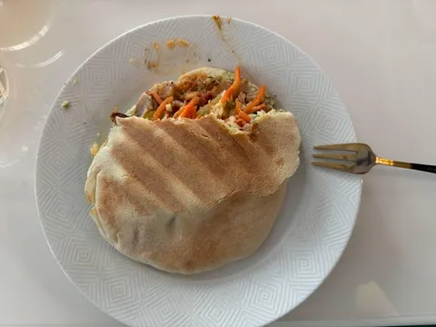
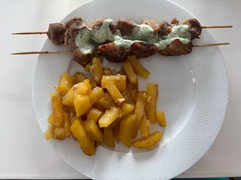
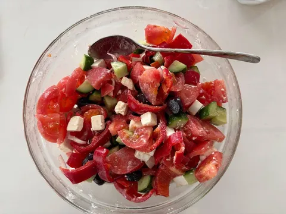
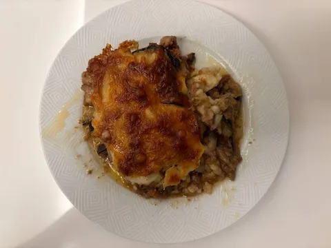

Боги Олимпа смилостивились над нами и послали нам неделю греческой кухни. А тут еще и гости подъехали и помогли справиться с излишествами эллинского гостеприимства - сами мы столько не съедим.
Что мы знаем о Греции? Да на самом деле довольно много, из соображений общей эрудиции. А вот интересный случай нецелевого применения скиллов заключается в том, что математикам проще путешествовать по Греции, потому что все буквы, внезапно, знакомые. Вот только формула какая-то непонятная. Но хоть прочитать можно.
Греческая кухня по набору ингридиентов не слишком примечательна - основная специфика в соусах, творожном сыре и забавных названиях. На нашем столе побывали:
- греческий салат - не куда без него;
- сувлаки с соусом дзадзики - шашлычки в духовке все равно не заменят мангал, но куда деваться;
- гирос - почти та же шавуха, но в пите и со своим колоритом. Мы ее, правда, бафнули морковкой по-корейски;
- мусака - холестериновая кома, но бомбически вкусно, хвала Зевсу;
- тиропита - пирог из слоеного теста с фетой, который принесли гости, был очень даже хорош;
- авголемоно - суп из куриного бульона, пасты орзо, взбитых яиц и лимонного сока - оказался несъедобен, жена приготовила, попробовала и вылила, я даже попробовать не успел.
А в целом очень даже хорошо. В Греции надо бы еще раз как-нибудь оказаться, голодными точно не окажемся.



